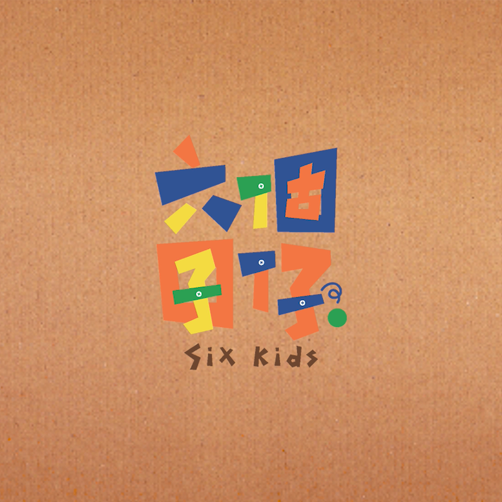

互動設計 Interactive

六個囝仔
作品為一款連動裝置作品，利用物理現象應用於這款作品，實現連動效果。
現今的人們總是追求「效率」，時常只想著快速地達到最終目標。依據這個概念發想，打造一款連動裝置，採用動物的元素以及鮮豔的色彩營造出馬戲團的視覺感，透過連鎖反應機關之間的關聯性，展現「過程」的重要性，將過程轉換為「經驗」，方能成為「結果」的養分。
應用技術 #牛頓三大定律 #虹吸現象 #3D 列印
榮獲2019 Adobe® Design Achievement Awards「Top Talent」的殊榮
榮獲2019全國會展活動之星競賽 第三名
榮獲109年度「教育部鼓勵學生參加藝術與設計類國際競賽計畫」獎勵金
心得
生活在便利的世界，人們總是追求「效率」，時常只想著快速地達到最終目標，而看似簡單的結果卻並不等於簡單的過程。我們運用物理現象的特性，透過連鎖反應機關之間的關聯性，展現「過程」的重要性，將過程轉換為「經驗」，方能成為「結果」的養分。
在製作的過程中，如何將這些物理現象一一使用於其中是最困難的部分，什麼樣的材質是會產生什麼樣的特性，又會導致什麼樣的結果，這些都是「過程」會遇到的變數，而經過無數次地反覆測試，因而獲得許多寶貴「經驗」去修正，才能完成這份作品，而我們也在製作過程中領悟這個作品想傳達的理念。
「六個囝仔Six Kids」能獲得國際競賽的肯定、被世界看見，是求學時期間一個很重要的里程碑，而能當學生好好的設計一份作品，不需要害怕犯錯而勇往直前，真的很幸福，謝謝曾經參與過的每一個工作夥伴，也許我們在途中經歷過懷疑、受挫，但也因這些養分的經過，才讓我們碰撞、磨合產生出「六個囝仔」，也謝謝自己的努力，讓我們在求學階段有了這一點點成就！